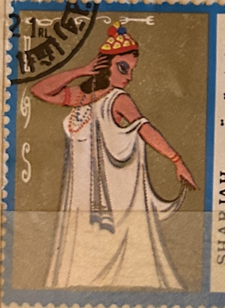
| SOURCE | TITLE| IMAGE MATCH | click to source page |
| www.mutualart.com | Kalighat Pat | Untitled | MutualArt | 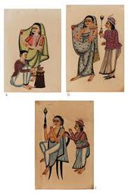 |
| collections.vam.ac.uk | Devi | Unknown | V&A Explore The Collections | 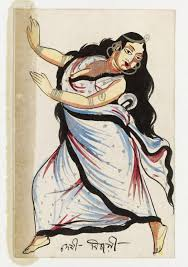 |
| www.etsy.com | FRIENDS Kalighat Style Painting in Watercolour. Hand-painted ... | 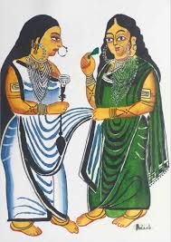 |
| www.facebook.com | Nandalal Bose - Haripura Posters These posters by Nandalal ... | 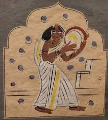 |
| www.storyltd.com | UNTITLED (KALIGHAT PAINTING) @ | StoryLTD | 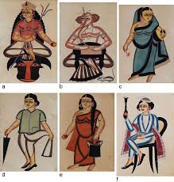 |
| commons.wikimedia.org | File:India, Calcutta, Kalighat painting, 19th century ... | 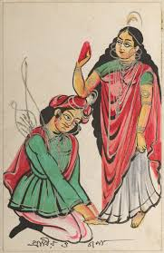 |
| www.indianmasterpainters.com | 1721641506.jpg | 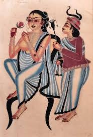 |
| www.ebay.com | Indian Folk Art KALIGHAT Babu And Bibi Vintage India ... | 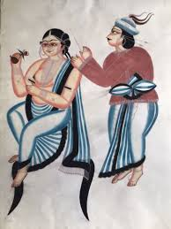 |
| www.clevelandart.org | Yasoda and Krishna | Cleveland Museum of Art | 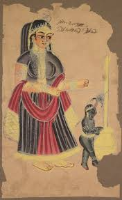 |
| www.etsy.com | KESHBATI Kalighat Style Painting in Watercolour. Hand ... | 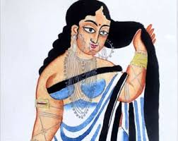 |
| theindiacrafthouse.com | Kalighat Paintings from West Bengal by The India Craft House ... | 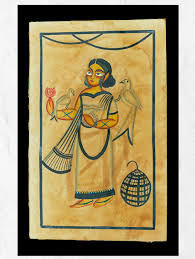 |
| www.mojarto.com | Kalighat Painting by Unknown Artist Online | Mojarto | 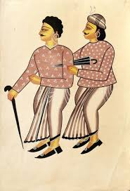 |
| aurumauctions.com | Aurum Auctions | 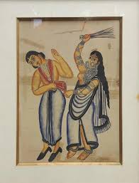 |
| www.indiamart.com | Keshbati Water Color Painting at best price in Kolkata by ... | 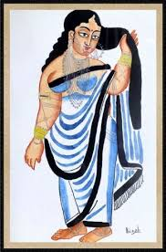 |
| www.swadeshonline.com | Kalighat Babu Bibi Painting | Swadesh Online | 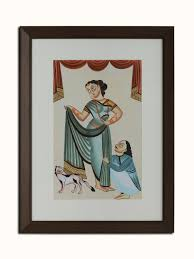 |
| www.facebook.com | Ancient Cretan women's fashion and clothing | 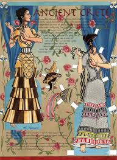 |
| x.com | Barber cleaning women's ears. 19th century Kalighat painting ... | 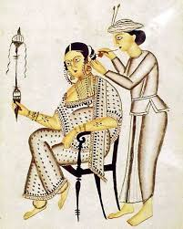 |
| www.chairish.com | Unknown, Costume for Aida, Tempera and Watercolor, 1920s ... | 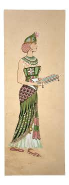 |
| www.artsoftheearthindia.in | Kalighat Art | 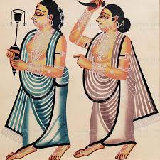 |
| www.mutualart.com | Kalighat Pat | Untitled (Couple) (20th Century) | MutualArt | 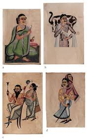 |
| in.pinterest.com | 32 Jamini Roy ideas | jamini roy, indian art, indian folk art | 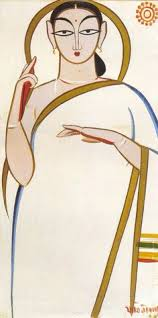 |
| www.judithstarkston.com | Mycenaean Kingship, Matrilineal Succession & Female Power by ... | 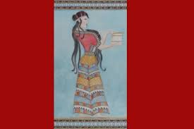 |
| www.tumblr.com | Woman, kalighat painting – @arjuna-vallabha on Tumblr | 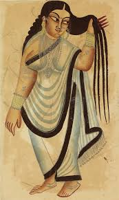 |
| en.wikipedia.org | Kalighat painting - Wikipedia | 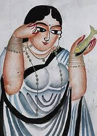 |
| vintagemenuart.com | Hi Lo Club Battle Creek Mi 1940s – Vintage Menu Art | 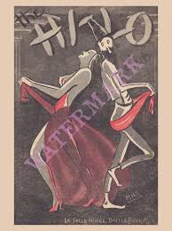 |
| www.instagram.com | As Calcutta (now Kolkata) grew into a major city, it ... | 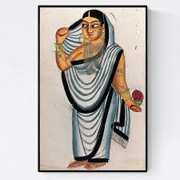 |
| www.roseberys.co.uk | Roseberys London | Arts of India (2025-06-10) | 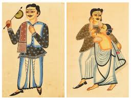 |
| palosverdeshistory.org | Costume design illustration board: No. 13 | Palos Verdes ... | 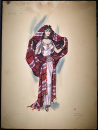 |
| www.clevelandart.org | Indian Kalighat Paintings | Cleveland Museum of Art | 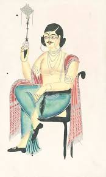 |
| asianart-gateway.jp | Kalighat Painting｜Art Terms｜Knowing｜Asian Art Resource Room | 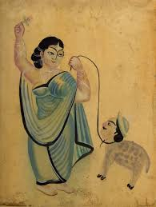 |
| www.compendiumauctions.com | Lot 158 - Indian Kalighat Painting Of A Wife Beating Her ... | 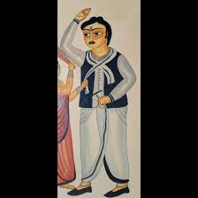 |
| christchurchartgallery.org.nz | Collection | Christchurch Art Gallery Te Puna o Waiwhetū | 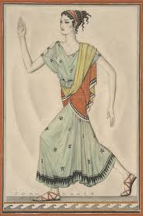 |
| www.storyltd.com | UNTITLED @ | StoryLTD | 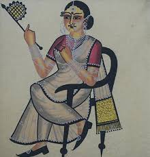 |
| www.memeraki.com | Kalighat Paintings | 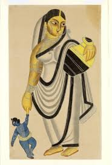 |
| americanlibrariesmagazine.org | PREVIEWp. 38 | 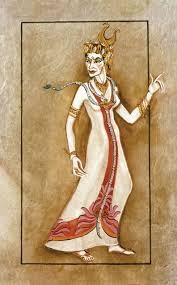 |
| www.worldhistory.org | Greek Woman - World History Encyclopedia | 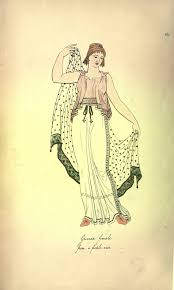 |
| www.mojarto.com | Kalighat painting by Unknown Artist Online | Mojarto | 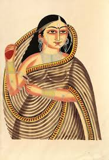 |
| www.artsoftheearthindia.in | Kalighat Art | 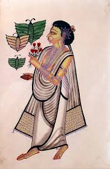 |
| commons.wikimedia.org | File:Kalighat pictures sep sheets 10.jpg - Wikimedia Commons | 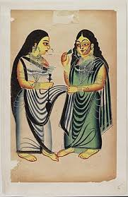 |
| www.alamy.com | illustration of a woman from Ancient Greece spinning wool ... | 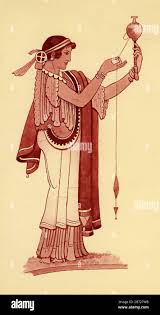 |
| collections.vam.ac.uk | Devi as Bagala | Unknown | V&A Explore The Collections | 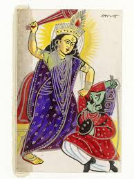 |
| wellcomecollection.org | Courtesans" | Search | Wellcome Collection | 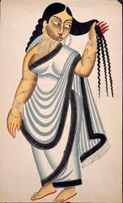 |
| sthapattya-o-nirman.com | Folk Painting: Kalighat Pattachitra | Sthapattya-O-Nirman | 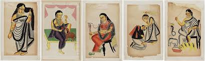 |
| in.pinterest.com | 120 Kalighat ideas to save today | indian art, indian folk ... | 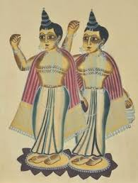 |
| www.indianmasterpainters.com | Kalighat Pot | 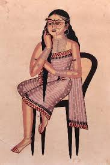 |
| www.mediastorehouse.com | Spinning in Ancient Greece: A Contemporary Print c. 1935 ... | 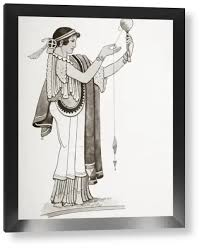 |
| www.ebay.com | Folk Art KALIGHAT Krishna Hindu God Vintage India Calcutta ... | 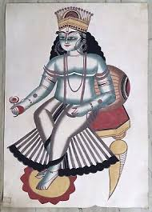 |
| hermitagefineart.com | GEORGE BARBIER (1882-1932) Two drawings : Greek character ... | 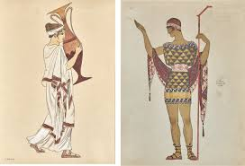 |
| www.swadeshonline.com | Kalighat Babu Bibi Painting | Swadesh Online | 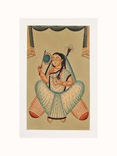 |
| www.instagram.com | Step into the world of the gods with our brand new Hercules ... | |
| www.nypl.org | Parting Company: Paintings from India in NYPL's Digital ... | |
| charminglyantiquated.tumblr.com | charmingly antiquated — i often think about bringing the ... | |
| www.youtube.com | Indian Folk Art Painting Kalighat Patachitra Painting P4 ... | |
| en.wikipedia.org | Meenakshi - Wikipedia | |
| digital.library.illinois.edu | Helena | Digital Collections at the University of Illinois at ... | |
| www.artzolo.com | Kalighat Paintings: Folk Art of East India – ArtZolo.com | |
| www.exoticindiaart.com | Damsels from Rajasthan | Exotic India Art | |
| world4.eu | Richly ornamented and embroidered Assyrian Skirts. | |
| www.pamono.eu | Otto von Faber Du Faur, Man Sitting in the Studio ... |
{kind=link}
{kind=link}